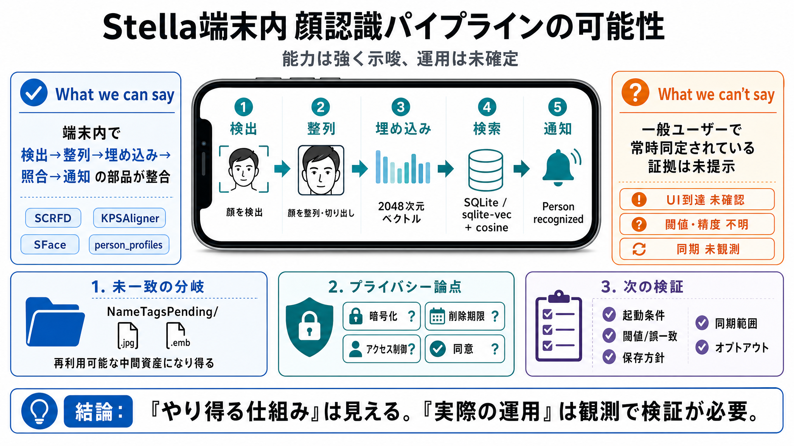

Meta's smart glasses companion app ships a complete, dormant face-recognition pipeline on a stock account.
Inspecting version `273.0.0.21` of the Android build (`com.facebook.stella`), I found the entire computational and stora…

解析では、Metaスマートグラス用コンパニオンアプリ「Stella」のAndroid版に、検出→整列→埋め込み→照合→通知までの“仕組み一式”が端末内でつながり得ることが示唆されます。
「端末に機能が組み込まれている」ことと「一般の利用者が実際に他人の顔を識別される状態で運用されている」ことは別問題です。
入力データは、StellaのAndroidビルド（com.facebook.stella v273.0.0.21）の解析から、顔認識パイプラインの部品が端末上でつながる可能性を示します。
検出（顔位置）から整列（正規化）、顔埋め込み（ベクトル）生成、ベクトル検索、通知表示、未一致時の保存までの分岐が“同じ設計の形”で見えます。
端末上のローカルSQLiteデータベースに、顔特徴量の照合に合わせたスキーマ（person_profiles）が整合する形で見え、ベクトル検索（sqlite-vec）も組み込まれています。
未一致時に、クロップ画像と2048次元埋め込み（.jpg と .emb）が保存される分岐（NameTagsPending/）が示されています。
通知は「Person recognized」や「Recognized <name>」の文言が想定され、深リンク（例：fb-viewapp://...）で人名表示へ誘導する設計が見えます。
入力データでは、通常ユーザーが日常的に“同様の条件”で照合されることを直接示す証拠（UI到達・通知の実出現・サーバー投入の観測）が欠けています。
cosine類似度で候補を見つけることと、「同一人物だと確信して同定すること」は別です。閾値、照合精度、誤一致時の扱いが必要です。
未一致時にクロップ画像と埋め込みが保存され得る構造は、端末内保管のリスク（漏えい・端末紛失・権限奪取）を考える材料になります。
運用の有効性やプライバシー影響を判断するには、起動条件・閾値・保存方針・同期の実測などが必要です。
入力データは「端末内で顔認識のパイプラインが成立し得る」ことを具体的部品レベルで示しますが、「一般ユーザーが常時他人の顔を識別される運用が進行している」までは証明できていません。
Inspecting version `273.0.0.21` of the Android build (`com.facebook.stella`), I found the entire computational and stora…
12 hours ago - The revelation comes from WIRED's technical analysis of Meta's smart glasses platform, which found dorman…
# Meta Silently Added Face-Recognition Code for Its Smart Glasses to Millions of Phones. Code reviewed by WIRED uncovere…
8 hours ago - A new report suggests that Meta has placed unreleased face-recognition code for smart glasses in an app do…
February 14, 2026 - In an internal memo last year, Meta said the political tumult in the United States would distract cr…